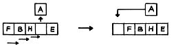
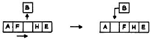
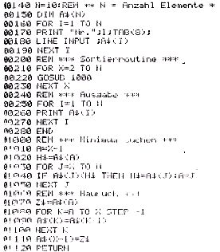

Nascom Journal |
Juli 1981 · Ausgabe 7 |
Beim Aufeinanderlöten von je zwei 4116 sind unbedingt die Vorschriften für den Umgang mit MOS-ICs zu beachten. Um keinen Wärmestau im Betrieb zu riskieren, sollte der Abstand der ICs möglichst groß bleiben. Weiterhin sollten nicht alle Beinchen unmittelbar nacheinander gelötet werden, um die ICs nicht zu „braten“.
|
Günter Endert |
Sortieren in
BASIC
Neue Serie
von Wolfgang Mayer-Gürr
Wenn man seinen Computer auch für Verwaltungszwecke einsetzen will, müssen dabei oft größere Datenmengen sortiert werden. Da diese Verfahren meist sehr zeitaufwendig sind, lohnt es sich, über einen für den jeweiligen Zweck geeigneten Sortieralgorithmus nachzudenken.
In einer Serie sollen deshalb hier folgende Sortierverfahren vorgestellt werden:
1. Hauruck – Sortieren
Naheliegend ist es, wenn wir bei der Übertragung eines Probleme auf ein Programm uns erst einmal vor Augen führen, wie wir ohne Computer vorgehen würden. Ein ungeordneter Stapel Karteikarten soll sortiert werden. Ein Weg ist es, den Stapel durchzugehen, die Karte mit dem niedrigsten Wert (bzw. Anfangsbuchstaben) herauszunehmen und sie dann an den Anfang des Stapels zu legen. Beim folgenden Durchgang ist die Anzahl der zu prüfenden Karten um eine geringer geworden; wir haben ja die niedrigste aus dem Suchprozeß entfernt. Jetzt wird wieder die Karte mit dem geringsten Wert gesucht und hinter die erste gelegt. Um 10 Karten zu sortieren, muß man 9 mal einen immer kürzer werdenden Suchprozeß durchführen.
Beim Suchen merken wir uns immer die Karte mit dem jeweils kleinsten Wert und die Stelle, wo diese Karte steckt. Der Wert wird mit dem der folgenden Karte verglichen. Ist er kleiner, ist dieser das neue Minimum.
Wenn ich den Kartenstapel in der Hand halte (also keine zusätzliche Ablage – sprich Speicherplatz – ), verändern sich die Plätze der hinteren Karten, wenn die jeweilige Minimumkarte nach vorne gesteckt wird. Das Programm muß deshalb aus 2 Teilen bestehen:
a) Minimum suchen
b) durch Hauruck Platz schaffen und einfügen
Folgendes Feld soll sortiert werden
Das Minimum liegt im 4.Feld, die „Karte“ wird herausgenommen, durch Nachrücken wird der 1. Platz frei.
Beim folgenden Durchlauf wird das Minimum ab der 2. Stelle gesucht.
Für das Programm wird eine Hilfsvariable ( H§) gebraucht, die den Wert des jeweiligen Minimums speichert, in A steht die Stelle. Z§ ersetzt die Hand, die die Karte hält, während die Einrückstelle freigemacht wird.
|
 |
|

Wird fortgesetzt…
WMG
| Seite 13 von 20 |
|---|